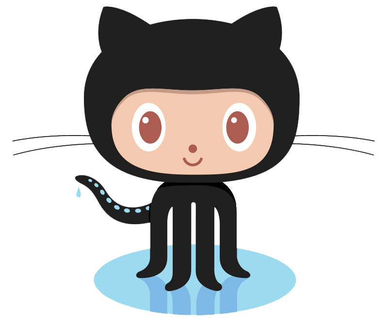

Como criar uma website via R
EAR: R Documentações Ben Dêivide | UFSJ
Encarte
Filosofia de publicação (Selo DC)

Pré-requisitos
Pré-requisitos
Material de apoio

Mão na massa!
- Criar uma página web apenas com o R (Hugo Lithium)
- Melhor customização: HTML, CSS, JavaScript, etc (Fora do escopo!)
- Chamaremos via GitHub o projeto: Hugo Lithium
- Configurar a página criada
- Subiremos o projeto ao GitHub
- Ativar a página!
Ideias sobre website no R
- Páginas estáticas e Páginas dinâmicas
- Servidor local (Desenvolvimento)
- Servidor da página (GitHub)
- Raiz (
./) oudocs/ index.html
- Raiz (
- Arquivos YAML:
<>.yaml
Projetos de páginas
- Padrão RStudio (Yihui Xie):
- Hugo-Acadêmico
- Hugo-Story
- Livro bookdown
Referências de livros
Usando o blogdown

Usando o bookdown
Github + RStudio + Pacote usethis

+
+

"Push" ao Github
R> usethis::use_git()
R> usethis::use_github()
Dicas
Obrigado!
Sugestões, perguntas, críticas…